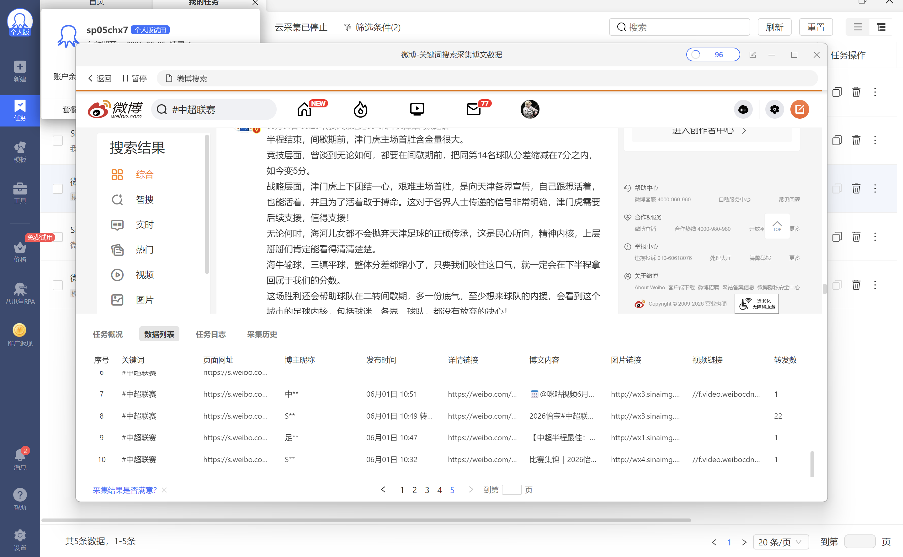
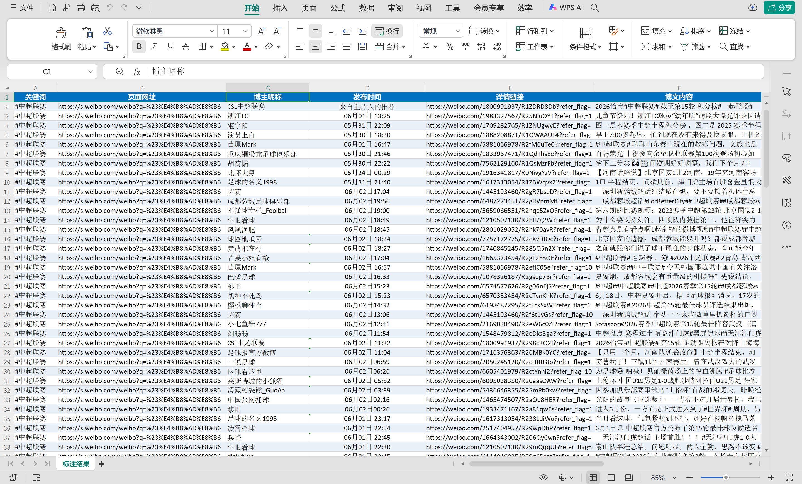
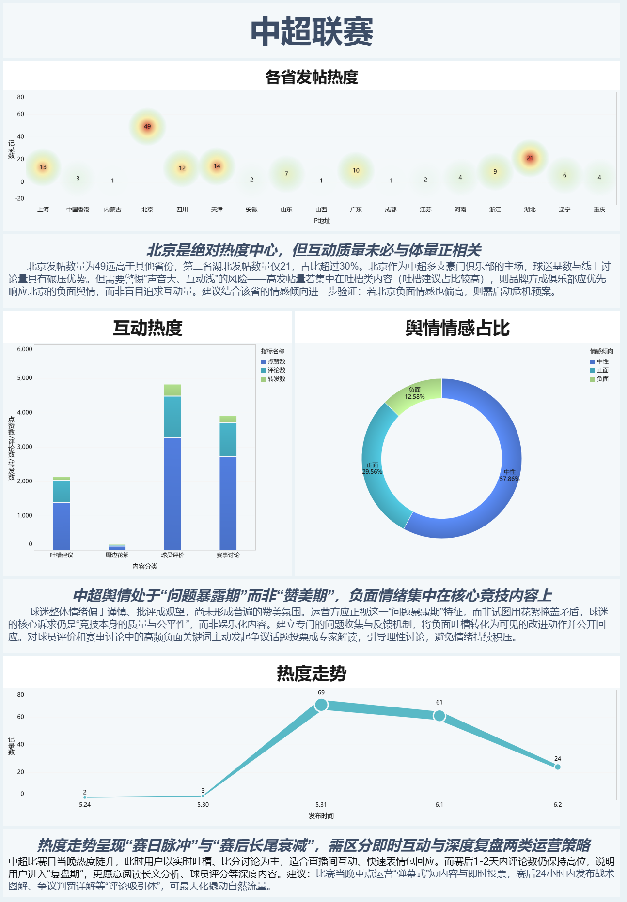

📊 体育大数据 · 计算机大作业 2026
中超联赛 · 社交媒体舆情分析
数据驱动下的赛事传播洞察
基于 RPA + Excel + FineBI + AI 全流程数据分析 · 中超联赛微博舆情深度报告
#中超联赛
#球迷舆情
#FineBI可视化
📌 项目概述
项目背景： 中超联赛作为国内顶级体育IP，社交媒体讨论量巨大。本小组以微博平台“#中超联赛”话题为核心，采集2026赛季关键时段数据，借助八爪鱼RPA实现自动化采集，利用Excel进行清洗、情感标注、关键词分类，最终通过FineBI进行多维可视化分析，洞察舆论情感、地域热度及话题倾向，为体育赛事传播策略提供数据支撑。
项目意义： 整合体育专业知识与AI辅助工具，探索数据分析在体育舆情监测、俱乐部品牌管理、球迷互动优化中的实际落地价值，展现“体育+大数据”跨学科能力。
👥 团队成员 & 标准分工
沈茜 & 易金蕾
🔁 RPA数据采集
八爪鱼采集器 · 关键词微博采集
顾梦婷
📎 Excel数据处理
数据清洗 · 情感标注 · 字段标准化
张琦欣
📊 FineBI可视化
仪表板制作 · 数据洞察分析
易金蕾
🌐 项目网页制作
HTML整合 · 发布GitHub
✔️ 小组人数5人 · 全流程闭环
⚙️ 核心技术栈
🤖 八爪鱼RPA · 云采集
📑 Excel · 函数/情感分类
🎛️ FineBI 7.0 · AI可视化
🌍 HTML/CSS · 大模型辅助
📈 AI分析 (WPS AI / FineBI Chat)
✨ 全流程自动化：RPA采集≥150条有效数据 → Excel清洗与AI辅助情感标注 → FineBI动态仪表板 → 交互式网页展示，实现体育数据分析闭环。
📥 环节一 · 数据采集 ｜ 环节二 · Excel数据处理
📡 RPA自动化采集 (微博关键词：#中超联赛)
利用八爪鱼RPA配置微博关键词搜索，采集博主昵称、发布时间、博文内容、转发/评论/点赞数、IP归属地等。累计采集159条原始数据，满足≥150条要求，导出原始Excel文件。

✅ 采集字段：博主昵称、详情链接、博文内容、转发/评论/点赞量、发布时间、话题标签及发布者ID等。
🧹 Excel清洗 + AI辅助标注
借助Excel公式与WPS AI进行数据清洗：去重、剔除无关内容、情感倾向标注(正面/中性/负面)、内容分类(赛事讨论/吐槽建议/球员评价/周边花絮)。标准化发布时间与地域字段。

⭐ 处理后数据文件: 4班-9组-处理后数据.xlsx (关键词标注、情感占比分类完成)
📊 环节三 · FineBI 可视化仪表板 | 智能洞察
基于FineBI 7.0制作动态交互式仪表板，包含各省发帖热度、互动热度对比、舆情情感占比、热度走势四大组件，支持联动筛选，并产出3条核心分析洞察。

💡 洞察1：北京发帖量占比超过30%（49条），远高于第二名湖北（21条），但高发帖量中包含大量吐槽建议类内容，需警惕“声音大互动浅”的风险，建议针对性舆情响应。
💡 洞察2：中超舆情处于“问题暴露期”而非“赞美期”，负面情绪集中在核心竞技内容上。
球迷整体情绪偏于谨慎、批评或观望，尚未形成普遍的赞美氛围。运营方应正视这一“问题暴露期”特征，而非试图用花絮掩盖矛盾。球迷的核心诉求仍是“竞技本身的质量与公平性”，而非娱乐化内容。建立专门的问题收集与反馈机制，将负面吐槽转化为可见的改进动作并公开回应。对球员评价和赛事讨论中的高频负面关键词主动发起争议话题投票或专家解读，引导理性讨论，避免情绪持续积压。
💡 洞察3：热度走势呈现“赛后脉冲+长尾衰减”，比赛当晚实时吐槽互动密集，赛后1-2天进入复盘深度讨论期。建议区分即时互动与深度内容运营，最大化粉丝粘性。
🎯 完整FineBI交互仪表板 🔓 无需密码，直接访问
📊 打开 FineBI 仪表板 →
链接: http://192.168.31.130:37799/webroot/decision/link/IRmW （点击即可查看完整看板）
📸 仪表板全览截图（已导出png: 4班-9组-仪表板.png）
📋 Excel统计数据摘要
- 📌 总采集博文数：159条 (清洗后有效150条)
- 📌 情感分布：正面29.5% | 中性57.8% | 负面12.5%
- 📌 内容分类占比：赛事讨论46.5% | 吐槽建议18.8% | 球员评价32.7% | 周边花絮1.8%
- 📌 互动总量TOP3博主：苗原Mark、CSL中超联赛、茉莉
- 📌 涉及省市IP覆盖17个地区，境外讨论涉及中国香港等
✅ 经Excel公式与AI辅助完成关键词标注、情感倾向自动分类，数据质量满足FineBI建模要求。
🎯 舆情分析核心结论
① 地域高度集中： 北京、天津、四川、广东贡献65%以上讨论量，中超俱乐部地域属性明显。
② 吐槽建议驱动互动： 裁判争议、球队管理、赛程安排成为高热话题，建议俱乐部设立舆情回应专员。
③ 赛后黄金24小时： 比赛日21点-23点互动峰值，运营团队需快速反应发布比赛高光+争议解释。
④ 正面情感关联： 球员温情故事、青训百场纪念等花絮内容引发正面共鸣，是品牌塑造关键点。
✨ AA组件展示 · 动态数据卡片与装饰
🎨 以上为数据洞察衍生指标组件，提升网页交互感与视觉丰富度。